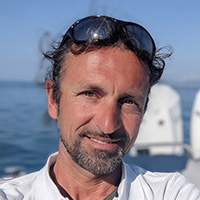

You can never cross the ocean if you don't have the courage to lose sight of the shore.
Christopher Columbus
The sea has always been my passion; wherever I go, I seek the poetry and fascination that only environments at the edge of the everyday can offer. I have sailed alone, striving to cast aside the superfluous, in the hope that new horizons would satiate my desire for discovery and that some part of me would never be the same again. I embrace change, for it is the only way to find balance in a space-time that evolves incessantly.
Solitude helped me evolve early on; it granted me more time to enjoy harmony with the rhythms of nature, eventually leading me to realize that sharing this experience was the natural destination of my search for harmony. My ambition is to convey the beauty of what I have lived, without any desire to convince anyone. I look, above all, to those who today resemble me in the past—when the only certainty was the passing of time, measured by a rhythm that was not my own.
I offer my experience to those who wish to discover authentic places, far from the crowds, for an unforgettable adventure-vacation. I can professionally facilitate yacht charters in any corner of the Mediterranean. If you are looking for an authentic journey and want to share this passion, I am here to help you live the dream.
Davide